Cómo se comunican la CPU, la memoria, el chipset y los periféricos: PCIe, DMI, SATA, NVMe, USB, Thunderbolt, I²C, SPI y los headers del chasis.
apoyo visual de aulamodo presentadorenfoque práctico
Abre la unidad con una pregunta: ¿cómo llega al procesador lo que guarda un SSD o lo que escribes en el teclado? La presentación resume el mapa mental y no sustituye a los apuntes completos.
OBJETIVOS
Al terminar esta unidad podrás…
1. Explicar qué es un bus
Conocerás sus parámetros (ancho, velocidad y ancho de banda) y sus topologías.
USB, audio, panel frontal y COM, respetando el pin 1 y la clave.
Marca los objetivos como una ruta. Pide al alumnado que anticipe qué buses conoce ya (USB, SATA…) y cuáles espera aclarar.
VOCABULARIO ESENCIAL
Palabras que ordenan el tema.
BusConjunto de líneas y reglas (protocolo) para transferir datos entre componentes.
LaneEn PCIe, un par de hilos de ida y otro de vuelta: 4 hilos, full‑duplex.
GT/sGigatransferencias por segundo: velocidad de señalización antes de descontar la codificación.
Ancho de bandaDatos útiles por segundo (GB/s), normalmente por sentido.
Punto a puntoEnlace dedicado entre dos extremos, sin compartir (PCIe, SATA, DMI).
Chipset (PCH)Concentra USB, SATA, red y audio; se enlaza con la CPU por DMI o PCIe.
NVMeProtocolo de los SSD sobre PCIe, con baja latencia y colas profundas.
HeaderBloque de pines de la placa que lleva señales al frontal del chasis.
Fija el lenguaje común antes de entrar en los buses. Pide definiciones cortas con las palabras del alumnado.
CONCEPTO
¿Qué es un bus?
Un bus son las líneas y las reglas que mueven datos entre componentes.
Los tres buses clásicos: direcciones (dónde), datos (qué) y control (cómo).
Hoy viajan por enlaces serie punto a punto, pero el concepto sigue vigente.
Idea clave. Siempre hay que saber con quién se habla, qué se transmite y cómo se coordina.
Los tres buses clásicos de un sistema.
Explica los tres buses con un ejemplo: la CPU lee una posición de memoria (dirección), recibe el dato y usa las líneas de control para indicar lectura o escritura.
PARÁMETROS
Cómo se mide y se clasifica un bus.
Ancho y velocidad
Bits que viajan a la vez y transferencias por segundo (MT/s o GT/s).
Codificación
Bits extra de control: 8b/10b aprovecha el 80 %; 128b/130b, ≈98,5 %.
Serie frente a paralelo
El paralelo sufre skew y limita la frecuencia; el serie con pares diferenciales llega mucho más lejos.
Topología
Compartido (PCI, I²C), punto a punto (PCIe, SATA, DMI), árbol (USB) o conmutado.
Haz que el alumnado repita los dos cálculos con una calculadora. Insiste en que son valores teóricos máximos.
MAPA DE BUSES
Los buses de un PC actual.
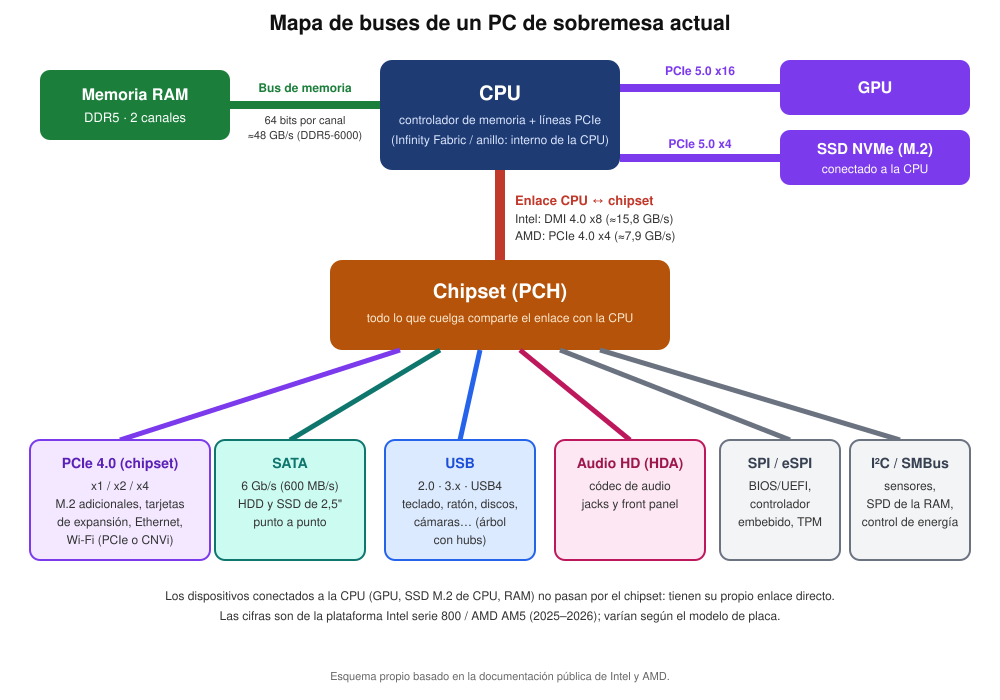
Mapa de buses de un PC de sobremesa actual.
La CPU integra el controlador de memoria y las líneas PCIe de la GPU y del SSD M.2 principal.
El chipset concentra SATA, USB, red, audio, SPI e I²C.
Lo que cuelga del chipset comparte un único enlace con la CPU.
Recorre el esquema de arriba abajo: primero lo que va directo a la CPU, después el enlace con el chipset y, por último, los buses que salen del chipset.
CPU, MEMORIA Y CHIPSET
Del FSB a los enlaces punto a punto.
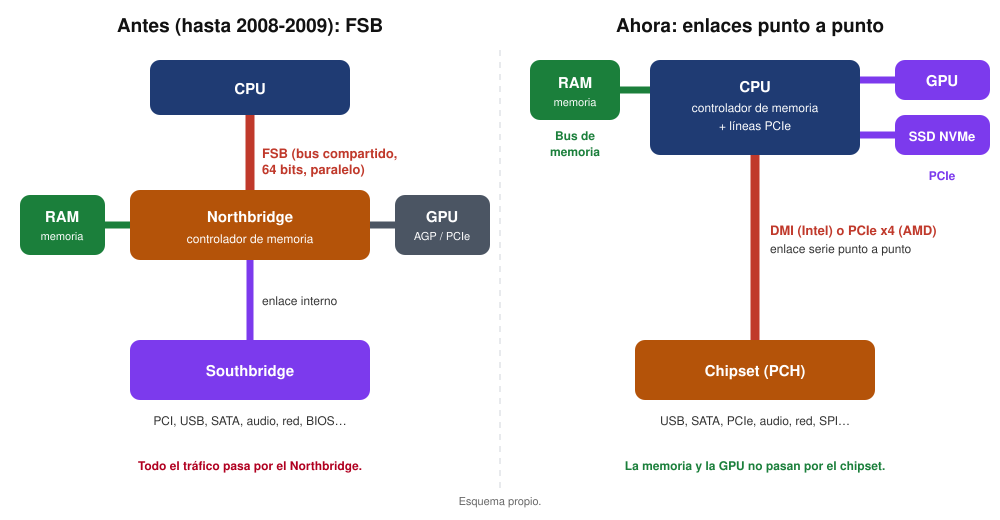
Antes todo pasaba por el Northbridge; hoy la CPU integra memoria y PCIe.
El FSB era un bus paralelo y compartido de 64 bits, de hasta ≈12,8 GB/s.
Lo sustituyeron HyperTransport (AMD), QPI y DMI (Intel); hoy, DMI o PCIe x4.
El controlador de memoria pasó a la CPU: la RAM ya no usa el chipset.
Compara las dos mitades del esquema. Pregunta: ¿qué ventaja tiene que la GPU y la memoria no dependan del chipset?
ENLACE CON EL CHIPSET
Un único camino para todo el chipset.
Intel: DMI
Serie 800: Z890 usa DMI 4.0 x8 (≈15,8 GB/s por sentido); B860 y H810, DMI 4.0 x4 (≈7,9 GB/s).
AMD: PCIe
Un enlace PCIe 4.0 x4 (≈7,9 GB/s). X670, X670E y X870E llevan dos chips Promontory 21 en cadena que comparten ese enlace.
Consecuencia. Un solo SSD PCIe 4.0 x4 al máximo (≈7,9 GB/s) llenaría el enlace de una plataforma AMD: los SSD más rápidos y la GPU van a las líneas de la CPU.
Pide al alumnado que sume lo que podrían pedir a la vez USB, SATA y un M.2 del chipset, y lo compare con el enlace.
PCI EXPRESS
Lane, enlace y ranura.
Una lane son dos pares de hilos (uno por sentido): 4 hilos, full‑duplex.
Un enlace reúne 1, 2, 4, 8 o 16 lanes: x1, x2, x4, x8, x16.
La ranura es el tamaño mecánico: una ranura x16 puede funcionar a x4.
Cada versión es retrocompatible con las anteriores.
Un enlace PCIe x4 está formado por cuatro lanes.
Dibuja en la pizarra un enlace x1 y uno x4. Relaciona el número de lanes con el ancho de banda total.
PCI EXPRESS
Generaciones y velocidades.
Versión
Año
GT/s
GB/s por lane
x16 (GB/s)
3.0
2010
8
0,985
15,75
4.0
2017
16
1,969
31,5
5.0
2019
32
3,938
63
6.0
2022
64
7,563
121
7.0
2025
128
15,125
242
Valores por sentido. En consumo se usan hoy PCIe 4.0 y 5.0.
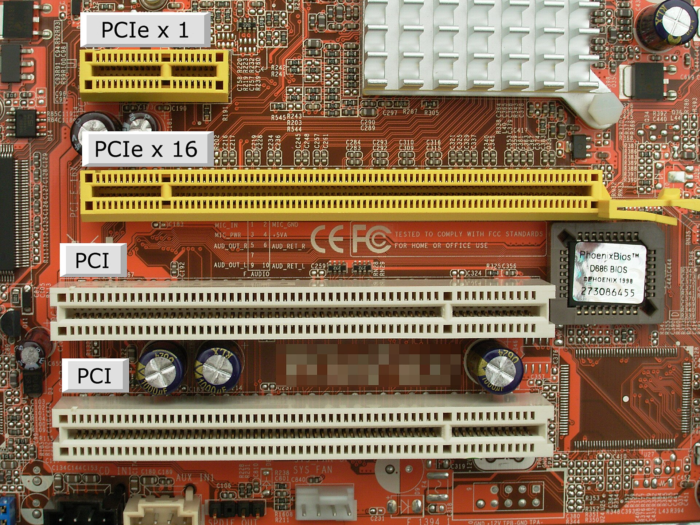
Ranuras PCIe x1 y x16 junto a dos ranuras PCI.
Cada generación duplica la velocidad de la anterior. Pregunta: ¿cuánto vale una GPU x16 en PCIe 4.0 y en PCIe 5.0?
ALMACENAMIENTO
SATA: un puerto por dispositivo.
Conector de datos SATA y puertos de la placa.
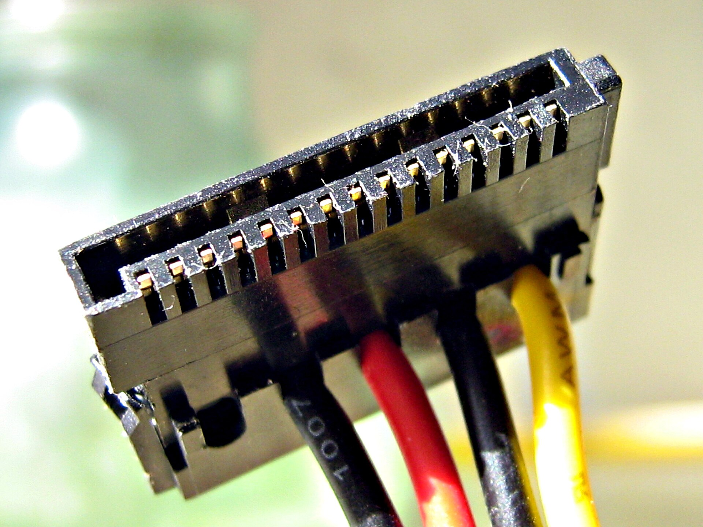
Conector de alimentación SATA (15 contactos).
SATA 3.0: 6 Gb/s, unos 600 MB/s útiles; cable de datos de hasta 1 m.
Admite conexión en caliente y NCQ con el modo AHCI.
SATA es punto a punto: cada disco tiene su puerto. Compara con el antiguo IDE, paralelo y compartido.
ALMACENAMIENTO
M.2 es el conector; NVMe, el protocolo.
Las muescas (claves) del conector M.2.
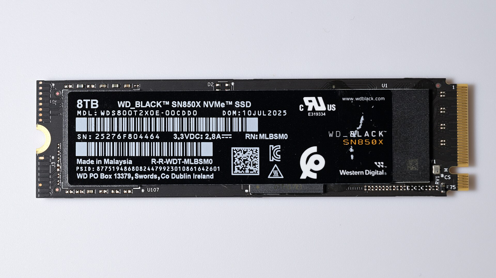
SSD M.2 2280 de clave M.
M.2: factor de forma y conector; la clave indica si lleva SATA, PCIe, USB…
NVMe: protocolo del SSD · PCIe: el bus físico (normalmente x4).
Tamaños 2230, 2242, 2260, 2280 y 22110 (ancho × largo en mm).
Aclara que M.2 no es un bus: un M.2 puede ser SATA o NVMe. La clave M suele indicar NVMe; la B o B+M, SATA o PCIe x2.
ALMACENAMIENTO
SATA frente a NVMe.
SATA (AHCI)
NVMe (PCIe)
Interfaz
SATA 3.0
PCIe x4
Velocidad teórica
600 MB/s
≈7,9 GB/s (PCIe 4.0) · ≈15,8 GB/s (PCIe 5.0)
Protocolo
AHCI (discos giratorios)
NVMe (memoria flash)
Conector típico
SATA o M.2 B / B+M
M.2 clave M, U.2 o tarjeta PCIe
Se conecta a
Chipset
CPU (más rápido) o chipset
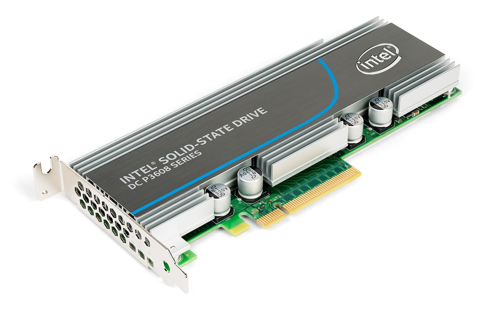
SSD NVMe en formato de tarjeta PCIe.
Un SSD NVMe es mucho más rápido que uno SATA porque usa varias lanes PCIe y un protocolo pensado para flash.
BUSES DE GESTIÓN
I²C, SPI y eSPI: pocos datos, mucha importancia.
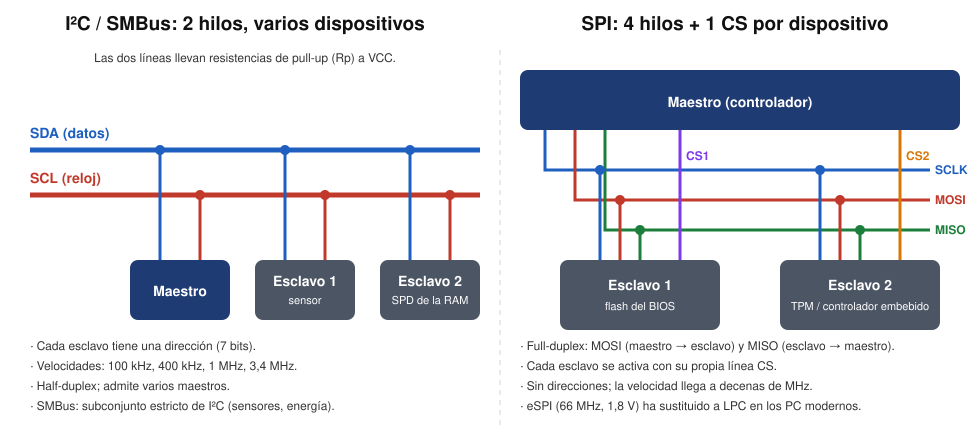
I²C y SPI: dos formas de conectar chips de baja velocidad.
I²C: dos hilos (SDA y SCL), direcciones de 7 bits; sensores y SPD de la RAM.
SPI: cuatro hilos más una línea CS por esclavo; flash del BIOS/UEFI.
eSPI (20–66 MHz, 1,8 V) sustituye a LPC para el EC, el TPM y el firmware.
Son los buses «invisibles»: sin ellos la placa no arranca. Pregunta: ¿dónde está guardado el BIOS/UEFI?
USB Y THUNDERBOLT
USB: un árbol con hubs.
Versión
Velocidad máxima
USB 2.0
480 Mb/s
USB 3.2 Gen 1
5 Gb/s
USB 3.2 Gen 2
10 Gb/s
USB 3.2 Gen 2x2
20 Gb/s
USB4
40 Gb/s
USB4 v2
80 Gb/s (120 asimétrico)
Velocidades teóricas; dependen del cable y del dispositivo.
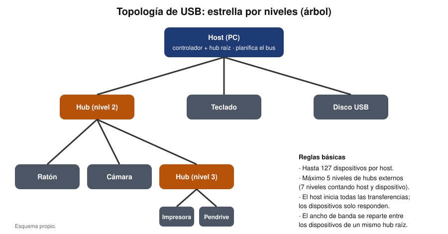
El host planifica el bus: hasta 127 dispositivos.
Aprovecha para aclarar la confusión de nombres: USB 3.0 es hoy USB 3.2 Gen 1. El host inicia todas las transferencias.
USB Y THUNDERBOLT
Thunderbolt y USB4.
Tecnología
Año
Velocidad
Conector
Thunderbolt 1
2011
10 Gb/s
Mini DisplayPort
Thunderbolt 2
2013
20 Gb/s
Mini DisplayPort
Thunderbolt 3
2015
40 Gb/s
USB‑C
Thunderbolt 4
2020
40 Gb/s
USB‑C
Thunderbolt 5
2023
80 (120) Gb/s
USB‑C
Thunderbolt combina PCIe y DisplayPort por un único cable. El cable del TB_HEADER solo lleva señales de control a la tarjeta; los datos van por PCIe.
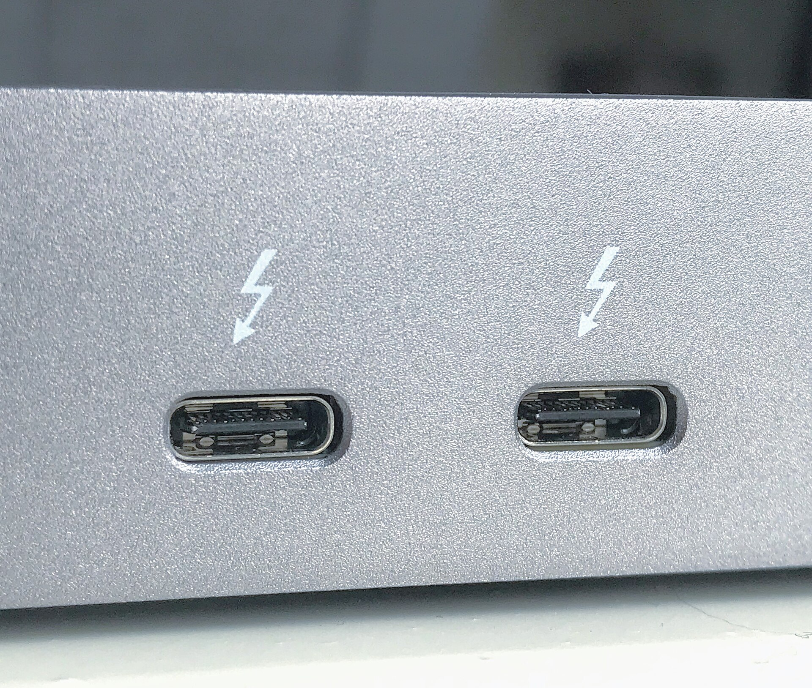
Puertos Thunderbolt 3 con conector USB‑C.
Thunderbolt 4 garantiza 40 Gb/s y requisitos mínimos; USB4 puede variar según el equipo. Recuerda que USB‑C es el conector, no la velocidad.
USB Y THUNDERBOLT
Pinout del TB_HEADER de Thunderbolt 4.
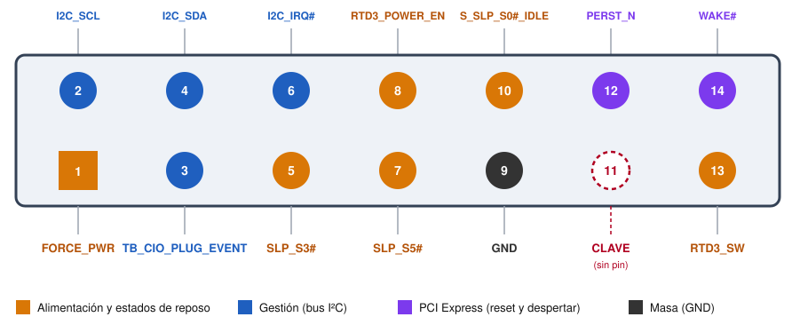
TB_HEADER de 14‑1 pines: filas impar (inferior) y par (superior); el pin 11 es la clave.
Es el header de las tarjetas Thunderbolt 4 como la ASUS ThunderboltEX 4: 13 pines más una clave.
Su cable lleva solo señales de control; los datos van por PCIe y el vídeo, por los cables DisplayPort IN.
Otros fabricantes usan otras distribuciones (ASRock: 5 y 10 pines; Gigabyte: THB_C): mira siempre el manual.
Recorre el esquema por colores: naranja (alimentación y reposo), azul (I²C), morado (PCIe) y gris (masa). Intel no publica la especificación completa: los nombres y posiciones proceden del manual de ASUS.
USB Y THUNDERBOLT
Función de cada pin (1/2): alimentación y reposo.
Pin
Señal
Función
1
FORCE_PWR
Fuerza el encendido del controlador Thunderbolt (en AMD, con el jumper Force_PWR de la tarjeta).
5
SLP_S3#
Del chipset, activa en bajo: suspensión a RAM (S3). La tarjeta reduce su alimentación.
7
SLP_S5#
Del chipset, activa en bajo: apagado suave (S5); se corta lo no esencial.
8
RTD3_POWER_EN
Habilita (enable) la alimentación del controlador en RTD3 (Runtime D3).
10
S_SLP_S0#_IDLE
Indica el reposo profundo SLP_S0# (S0ix): la tarjeta debe consumir lo mínimo.
13
RTD3_SW
Relacionada con RTD3 (jumper RTD3 de la tarjeta, por defecto sin RTD3); función exacta sin confirmar.
Las señales con # son activas en bajo. SLP_S3# y SLP_S5# las genera el chipset y la tarjeta las usa para saber en qué estado de energía está el equipo.
USB Y THUNDERBOLT
Función de cada pin (2/2): gestión, PCIe, masa y clave.
Pin
Señal
Función
2
I2C_SCL
Reloj del bus I²C de gestión entre la placa y la tarjeta.
3
TB_CIO_PLUG_EVENT
Evento de conexión (hot-plug) de Thunderbolt; en placas ASUS para AMD este pin es GND.
4
I2C_SDA
Datos del bus I²C de gestión.
6
I2C_IRQ#
Interrupción activa en bajo del bus I²C (probable origen: controlador USB-PD de la tarjeta).
12
PERST_N
Reinicio fundamental de PCIe: el controlador no arranca hasta que alimentación y reloj son estables.
14
WAKE#
Despertar de PCIe, activa en bajo: la tarjeta saca al sistema del reposo (p. ej., al conectar un dispositivo).
9
GND
Masa: referencia eléctrica de las señales.
PERST# lo genera la placa y WAKE# la tarjeta. El I²C permite que la placa y la tarjeta intercambien información de gestión; su uso exacto depende del diseño de cada fabricante.
HEADERS Y MONTAJE
Los headers de la placa.
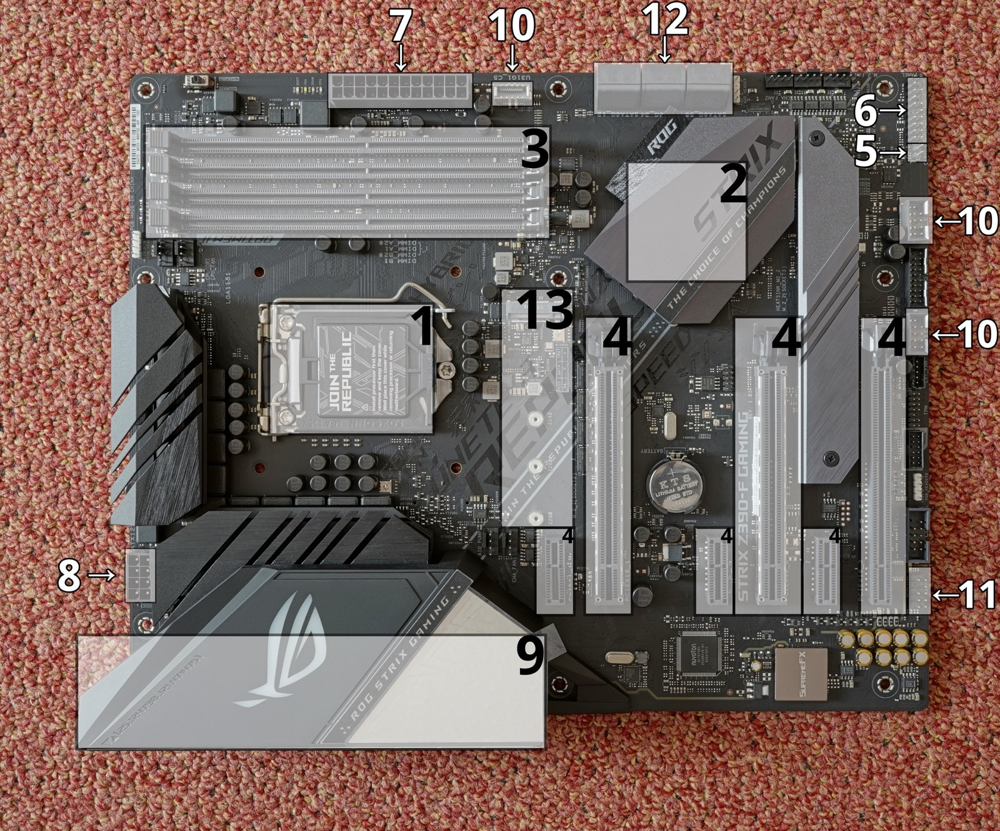
Placa ATX con los conectores numerados.
6 panel del sistema (F_PANEL).
10 conectores USB.
11 audio frontal (AAFP).
12 puertos SATA · 13 ranuras M.2.
Un header lleva señales al frontal del chasis y se identifica por su serigrafía, la clave y el pin 1.
Pide que localicen en una placa real los headers de la imagen. El manual de la placa es la referencia final.
HEADERS Y MONTAJE
USB frontal: 2.0, 3.x y Type‑E.
Header USB 3.x de 19 pines (pin 20 sin pin, como clave).
USB 2.0: header de 9 pines (2×5 con guía) para 2 puertos.
USB 3.x: 19 pines, dos puertos SuperSpeed; el cable debe ser apantallado.
Type‑E: 20 pines de clave A para un USB‑C frontal; Type‑C no implica USB4.
Resalta que cada puerto USB 3.x usa pares TX/RX y además las líneas D+/D− de USB 2.0. El pin 10 figura como ID (algunas placas lo usan como USBOC−).
HEADERS Y MONTAJE
Audio frontal y panel frontal.
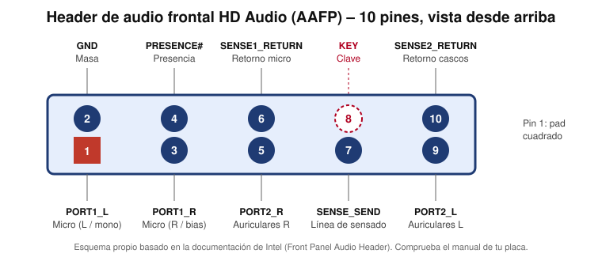
Audio frontal AAFP (HD Audio) de 10 pines.
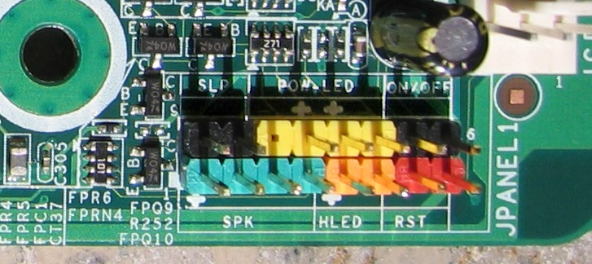
Panel frontal: SLP, POW LED, ON/OFF, SPK, HLED y RST.
Usa el cable HD Audio (no AC’97): el pin 4 (PRESENCE#) y las líneas SENSE detectan el jack.
En el panel frontal los LED tienen polaridad: si no lucen, invierte el conector.
El mapeo exacto varía según la placa: consulta siempre el manual.
Los pines 6 y 10 del AAFP son los retornos de detección del micrófono y de los auriculares. El pulsador no tiene polaridad; los LED sí.
HEADERS Y MONTAJE
Puerto serie COM (RS‑232).
Header COM de 10 pines hacia DB‑9: cable recto y null‑modem.Pinout del DB‑9 macho del PC (DTE).
El header 2×5 no sigue el orden del DB‑9: comprueba la tabla de pines de la placa y del cable.
Recto: PC ↔ módem · null‑modem: PC ↔ PC (cruza TX/RX y las líneas de control).
RS‑232 usa ±3–15 V; no lo conectes a un adaptador TTL de 3,3 V.
Recuerda que la distribución más habitual es la de DTK/Intel, pero existe otra (AT/Everex). Velocidades típicas de 9600 a 115200 baudios (8N1).
HEADERS Y MONTAJE
Procedimiento de montaje y verificación.
1
Planifica
Identifica F_USB, Type‑E, AAFP, F_PANEL, COM y TB_HEADER en el manual.
2
Orienta y conecta
Localiza el pin 1 o la clave; no fuerces y asegura los cables sin tensiones.
3
Comprueba
Prueba USB 2.0 y 3.x, audio, encendido, reset y LED, COM a 115200 8N1.
Regla de oro. Si el conector no entra, no se fuerza: se revisa la orientación, la clave y el pin 1.
Haz el procedimiento sobre una placa de pruebas. Cada fallo del siguiente apartado se evita con una de estas tres fases.
DIAGNÓSTICO
Fallos frecuentes y cómo se resuelven.
USB frontal lento
Cable Type‑E incorrecto, header Gen 1, ruta larga o masa floja.
USB‑C sin carga rápida
Falta el conector de alimentación adicional, el cable no es E‑Marker o la placa limita la potencia.
Sin audio frontal
Cable AC’97 en vez de HD Audio, detección de jack desactivada o masa mal rutada.
COM mudo
Confusión RS‑232 y TTL, puerto desactivado en la BIOS o falta un cable null‑modem.
Plantea cada fallo como un caso: ¿qué dato miraríais primero para comprobarlo?
REPASO
Preguntas para comprobar lo aprendido.
1. ¿Qué diferencia hay entre M.2, NVMe y PCIe?
El conector, el protocolo y el bus físico.
2. ¿Por qué un SSD PCIe 4.0 x4 puede saturar el enlace del chipset AMD?
Los dos ofrecen ≈7,9 GB/s por sentido.
3. ¿Cuánto ancho de banda tiene un canal DDR5‑6000?
6000 MT/s × 8 bytes = 48 GB/s.
4. ¿Cómo se identifica el pin 1 de un header?
Triángulo, pad cuadrado o serigrafía; consulta el manual.
5. ¿Qué diferencia hay entre un cable recto y uno null‑modem?
El null‑modem cruza TX/RX y las líneas de control.
Las respuestas figuran bajo cada pregunta; ocúltalas si quieres que las contesten en voz alta primero.
CIERRE · U04
Qué debes llevarte.
Un bus son líneas y reglas
Se describe por ancho, velocidad, codificación y topología.
Enlaces punto a punto
PCIe, DMI, SATA y USB sustituyeron a los buses paralelos compartidos.
El chipset comparte enlace
DMI en Intel, PCIe 4.0 x4 en AMD: lo rápido va a la CPU.
M.2, NVMe y PCIe
Conector, protocolo y bus: no son lo mismo.
Antes de terminar. Explica en voz alta qué es un bus, qué buses tiene tu PC y cómo comprobarías un header en un equipo real.
Cierra con una comprobación oral breve. Si el alumnado puede explicar qué es un bus, cuáles hay y cómo se comprueba un header, la unidad queda asentada.